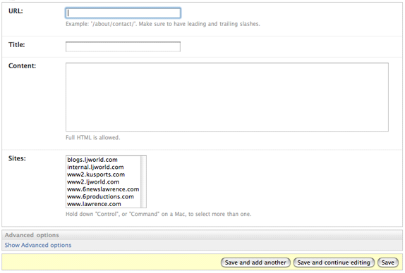
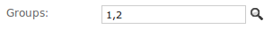

Django 1.8.2 文档
The Django admin site¶
Django中一个最强大的部分是自动管理接口，在模型中读取元数据来提供一个强大的、生产就绪的接口，使内容生产者能够立即使用它向站点中添加内容，在这篇文档中，我们讨论如何去激活，使用和自定义Django的站点管理接口。
Overview¶
通过使用startproject创建的默认的项目模版中admin是可用的。
作为参考，下面是一些要求：
- 添加 'django.contrib.admin'到INSTALLED_APPS 设置中.
- admin有四个依赖 - django.contrib.auth, django.contrib.contenttypes, django.contrib.messages 和django.contrib.sessions. 如果这些应用没有在 INSTALLED_APPS 列表中, 添加这些应用.
- 把 django.contrib.messages.context_processors.messages 添加到 DjangoTemplates后台定义在TEMPLATES中的'context_processors'选项，同样把django.contrib.auth.middleware.AuthenticationMiddleware 和 django.contrib.messages.middleware.MessageMiddleware 添加到 MIDDLEWARE_CLASSES. (这些默认都是激活的，所以你只需要这样做如果你手动调整过这些设置.)
- 确定哪一个应用模块是应该可编辑的在admin接口。
- 对于这些中的每一个模块,选择性的创建一个 ModelAdmin 类包含了自定义的管理功能和选择那些特殊的模块
- 实例化AdminSite 并且告诉他每一个模块和ModelAdmin 类.
- 绑定AdminSite实例到URLconf.
做了这些步骤之后, 你将能够使用Django管理站点通过访问你已经绑定的URL(/admin/, 默认的).
其他话题¶
ModelAdmin objects
- class ModelAdmin¶
ModelAdmin 类是admin接口中的一个代表模块，通常, 在应用中被存放在admin.py的文件中，让我们来看一个非常简单的ModelAdmin例子:
from django.contrib import admin from myproject.myapp.models import Author class AuthorAdmin(admin.ModelAdmin): pass admin.site.register(Author, AuthorAdmin)
你还需要一个ModelAdmin 对象吗?
在上面的例子中, ModelAdmin还没有定义一些自定义的值. 因此, 系统将使用默认的管理接口实现. 如果你非常喜欢使用默认的admin接口, 你就不需要定义 ModelAdmin 对象了– 你可以注册模块类不用提供 ModelAdmin 描述。上面的例子可以简写成:
from django.contrib import admin from myproject.myapp.models import Author admin.site.register(Author)
注册装饰¶
- register(*models[, site=django.admin.sites.site])¶
- New in Django 1.7.
还有一个装饰注册您的ModelAdmin类:
from django.contrib import admin from .models import Author @admin.register(Author) class AuthorAdmin(admin.ModelAdmin): pass
可以提供一个或多个模块类来注册ModelAdmin 并且一个选择性关键参数 site 如果不使用默认的AdminSite:
from django.contrib import admin from .models import Author, Reader, Editor from myproject.admin_site import custom_admin_site @admin.register(Author, Reader, Editor, site=custom_admin_site) class PersonAdmin(admin.ModelAdmin): pass
Discovery of admin files¶
当你将 'django.contrib.admin'加入到INSTALLED_APPS 设置中, Django会自动在每一个应用中搜索admin模块并导入。
- class apps.AdminConfig¶
- New in Django 1.7.
这是默认的AppConfig 类对于 admin. 它调用autodiscover() 当 Django 开始时.
- class apps.SimpleAdminConfig¶
- New in Django 1.7.
这个类和 AdminConfig作用一样,但是它不调用autodiscover().
- autodiscover()[source]¶
这个函数试图导入 admin模块在每一个已经安装的应用中. 那些希望被注册使用admin的模块.
Changed in Django 1.7:以前的Django版本推荐直接在URLconf中调用这个函数. Django 1.7不再需要这样. AdminConfig 能够自动的运行 auto-discovery.
如果你使用自定义的AdminSite, 一般是导入所有的ModelAdmin 子类在你的代码中并且注册他们到自定义的AdminSite. 在这个例子中, 为了使auto-discovery失效,你应该把 'django.contrib.admin.apps.SimpleAdminConfig'代替'django.contrib.admin' 放入到 INSTALLED_APPS 设置中.
在以前的版本中,admin需要被指示寻找 admin.py 文件通过 autodiscover(). 在Django 1.7, auto-discovery默认可用的，必须明确的使它失效当不需要时.
ModelAdmin options
ModelAdmin是非常灵活的. 它有几个选项来处理自定义接口. 所有的选项都在 ModelAdmin 子类中定义:
from django.contrib import admin
class AuthorAdmin(admin.ModelAdmin):
date_hierarchy = 'pub_date'
- ModelAdmin.actions¶
行为列表可使用在改变列表的页面中. 详细信息请查看Admin actions .
- ModelAdmin.actions_on_top¶
- ModelAdmin.actions_on_bottom¶
控制在页面上的行为栏的显示. 默认admin的更改列表显示行为在页面的顶部 (actions_on_top = True; actions_on_bottom = False).
- ModelAdmin.actions_selection_counter¶
控制选择计数器是否显示旁边的动作下拉. 默认的admin 更改列表将会显示它 (actions_selection_counter = True).
- ModelAdmin.date_hierarchy¶
设置 date_hierarchy 为 DateField或DateTimeField的名称在你的模块，并且更改列表将包含一个基于时间的明细导航通过这个域.
例如:
date_hierarchy = 'pub_date'
这将智能地填充自己根据现有数据，例如，如果所有的数据在一个月内, 它将只显示天级别的数据.
Note
date_hierarchy 在内部使用QuerySet.datetimes(). 请参考它的一些警告的文档当时区支持是可用的时(USE_TZ = True).
- ModelAdmin.exclude¶
这个属性, 如果使用, 应该是一个字段的列表没有包含在表单中。
例如, 让我们来考虑下面的model:
from django.db import models class Author(models.Model): name = models.CharField(max_length=100) title = models.CharField(max_length=3) birth_date = models.DateField(blank=True, null=True)
如果你想要个关于Author 模块的表单只包含 name and title 字段, 你应该具体说明fields 或 exclude 像这样:
from django.contrib import admin class AuthorAdmin(admin.ModelAdmin): fields = ('name', 'title') class AuthorAdmin(admin.ModelAdmin): exclude = ('birth_date',)
由于Author模块只有三个字段, name, title, 和 birth_date, 上面声明的表单结果将明确的包含相同的字段.
- ModelAdmin.fields¶
如果需要实现字段的布局中的“添加” 和 “更改”，“更改”网页形式的简单改变像只显示可用字段的一个子集，你可以使用 fields选项修改他们的顺序或者行内分组(需要复杂布局的请参阅fieldsets 选项将在下一段讲到). 例如,可以定义一个简单的管理表单的版本使用django.contrib.flatpages.models.FlatPage 模块像下面这样:
class FlatPageAdmin(admin.ModelAdmin): fields = ('url', 'title', 'content')
在上面的例子中, 只有字段url, title 和 content 将会在表单中顺序的显示. fields能够包含定义在 ModelAdmin.readonly_fields 中显示的值作为只读.
fields 选项, 不像 list_display, 只包含字段的名称在模块中或者通过form的具体说明. 它可能包含可调用的只有当它们列在readonly_fields中.
要显示多个字段在同一行, 包裹这些字段在同一个元组. 例如, url and title 字段 将会显示在同一行并且 content 字段将会显示在他们的下一行:
class FlatPageAdmin(admin.ModelAdmin): fields = (('url', 'title'), 'content')
Note
这个 fields 选项不应该与 fieldsets 选项中的 fields 字典关键字含糊不清, 就像下一段要讲的。
如果fields和fieldsets 选项都不存在, Django将会默认显示每一个不是 AutoField 并且 editable=True的字段, 在单一的字段集，和在模块中定义的字段有相同的顺序
- ModelAdmin.fieldsets¶
设置fieldsets 控制管理“添加”和 “更改” 页面的布局.
fieldsets 是一个二元元组, 每一个二元元组代表一个 <fieldset>在管理表单页面. ( <fieldset> 是表单的一部分.)
二元元组的格式是 (name, field_options), 其中 name 是一个字符串相当于 fieldset的标题， field_options 是一个关于 fieldset的字典信息,一个字段列表包含在里面。
一个完整的例子, 来自于django.contrib.flatpages.models.FlatPage 模块:
from django.contrib import admin class FlatPageAdmin(admin.ModelAdmin): fieldsets = ( (None, { 'fields': ('url', 'title', 'content', 'sites') }), ('Advanced options', { 'classes': ('collapse',), 'fields': ('enable_comments', 'registration_required', 'template_name') }), )
在管理界面的结果看起来像这样:
如果fields和fieldsets 选项都不存在, Django将会默认显示每一个不是 AutoField 并且 editable=True的字段, 在单一的字段集，和在模块中定义的字段有相同的顺序。
field_options 字典有以下关键字:
- fields
字段名元组显示在 fieldset. 这个关键字是需要的.
例如:
{ 'fields': ('first_name', 'last_name', 'address', 'city', 'state'), }
就像fields 选项, 显示多个字段在同一行, 包裹这些字段在一个元组. 在这个例子中, first_name 和 last_name 字段将显示在同一行:
{ 'fields': (('first_name', 'last_name'), 'address', 'city', 'state'), }
fields 能够包含定义在readonly_fields 中显示的值作为只读.
如果添加可调用的名称到fields中,相同的规则适用于fields选项: 可调用的必须在 readonly_fields列表中.
- classes
一个列表包含额外的CSS classes 应用到 fieldset.
例如:
{ 'classes': ('wide', 'extrapretty'), }
通过默认的管理站点样式表定义的两个有用的classes 是 collapse 和 wide. Fieldsets 使用 collapse 样式将会在初始化时展开并且替换掉一个 “click to expand” 链接. Fieldsets 使用 wide 样式将会有额外的水平空格.
- description
一个可选择额外文本的字符串显示在每一个fieldset的顶部,在fieldset头部的底下. 字符串没有被TabularInline 渲染由于它的布局.
记住这个值不是 HTML-escaped 当它显示在管理接口中时. 这可以包含HTML如果你非常渴望. 另外，你可以使用纯文本和 django.utils.html.escape() 避免任何HTML特殊字符。
- ModelAdmin.filter_horizontal¶
默认的, ManyToManyField 会在管理站点上显示一个<select multiple>. 但是，当选择多个时多选框非常难用. Adding a ManyToManyField to this list will instead use a nifty unobtrusive JavaScript “filter” interface that allows searching within the options. The unselected and selected options appear in two boxes side by side. See filter_vertical to use a vertical interface.
- ModelAdmin.filter_vertical¶
Same as filter_horizontal, but uses a vertical display of the filter interface with the box of unselected options appearing above the box of selected options.
- ModelAdmin.form¶
By default a ModelForm is dynamically created for your model. It is used to create the form presented on both the add/change pages. You can easily provide your own ModelForm to override any default form behavior on the add/change pages. Alternatively, you can customize the default form rather than specifying an entirely new one by using the ModelAdmin.get_form() method.
For an example see the section Adding custom validation to the admin.
Note
If you define the Meta.model attribute on a ModelForm, you must also define the Meta.fields attribute (or the Meta.exclude attribute). However, since the admin has its own way of defining fields, the Meta.fields attribute will be ignored.
If the ModelForm is only going to be used for the admin, the easiest solution is to omit the Meta.model attribute, since ModelAdmin will provide the correct model to use. Alternatively, you can set fields = [] in the Meta class to satisfy the validation on the ModelForm.
Note
If your ModelForm and ModelAdmin both define an exclude option then ModelAdmin takes precedence:
from django import forms from django.contrib import admin from myapp.models import Person class PersonForm(forms.ModelForm): class Meta: model = Person exclude = ['name'] class PersonAdmin(admin.ModelAdmin): exclude = ['age'] form = PersonForm
In the above example, the “age” field will be excluded but the “name” field will be included in the generated form.
- ModelAdmin.formfield_overrides¶
This provides a quick-and-dirty way to override some of the Field options for use in the admin. formfield_overrides is a dictionary mapping a field class to a dict of arguments to pass to the field at construction time.
Since that’s a bit abstract, let’s look at a concrete example. The most common use of formfield_overrides is to add a custom widget for a certain type of field. So, imagine we’ve written a RichTextEditorWidget that we’d like to use for large text fields instead of the default <textarea>. Here’s how we’d do that:
from django.db import models from django.contrib import admin # Import our custom widget and our model from where they're defined from myapp.widgets import RichTextEditorWidget from myapp.models import MyModel class MyModelAdmin(admin.ModelAdmin): formfield_overrides = { models.TextField: {'widget': RichTextEditorWidget}, }
Note that the key in the dictionary is the actual field class, not a string. The value is another dictionary; these arguments will be passed to the form field’s __init__() method. See The Forms API for details.
Warning
If you want to use a custom widget with a relation field (i.e. ForeignKey or ManyToManyField), make sure you haven’t included that field’s name in raw_id_fields or radio_fields.
formfield_overrides won’t let you change the widget on relation fields that have raw_id_fields or radio_fields set. That’s because raw_id_fields and radio_fields imply custom widgets of their own.
- ModelAdmin.inlines¶
See InlineModelAdmin objects below as well as ModelAdmin.get_formsets_with_inlines().
- ModelAdmin.list_display¶
使用 list_display去控制哪些字段会显示在管理的列表页面中
Example:
list_display = ('first_name', 'last_name')
如果你没有设置 list_display, 只会有一个列用于显示每个对象的 __str__() (python2中是__unicode__())内容.
在list_display中，你有4种赋值方式可以使用：
A field of the model. For example:
class PersonAdmin(admin.ModelAdmin): list_display = ('first_name', 'last_name')
一个可接受的对象实例的参数 例子：
def upper_case_name(obj): return ("%s %s" % (obj.first_name, obj.last_name)).upper() upper_case_name.short_description = 'Name' class PersonAdmin(admin.ModelAdmin): list_display = (upper_case_name,)
A string representing an attribute on the ModelAdmin. This behaves same as the callable. For example:
class PersonAdmin(admin.ModelAdmin): list_display = ('upper_case_name',) def upper_case_name(self, obj): return ("%s %s" % (obj.first_name, obj.last_name)).upper() upper_case_name.short_description = 'Name'
A string representing an attribute on the model. This behaves almost the same as the callable, but self in this context is the model instance. Here’s a full model example:
from django.db import models from django.contrib import admin class Person(models.Model): name = models.CharField(max_length=50) birthday = models.DateField() def decade_born_in(self): return self.birthday.strftime('%Y')[:3] + "0's" decade_born_in.short_description = 'Birth decade' class PersonAdmin(admin.ModelAdmin): list_display = ('name', 'decade_born_in')
A few special cases to note about list_display:
If the field is a ForeignKey, Django will display the __str__() (__unicode__() on Python 2) of the related object.
ManyToManyField fields aren’t supported, because that would entail executing a separate SQL statement for each row in the table. If you want to do this nonetheless, give your model a custom method, and add that method’s name to list_display. (See below for more on custom methods in list_display.)
If the field is a BooleanField or NullBooleanField, Django will display a pretty “on” or “off” icon instead of True or False.
If the string given is a method of the model, ModelAdmin or a callable, Django will HTML-escape the output by default. If you’d rather not escape the output of the method, give the method an allow_tags attribute whose value is True. However, to avoid an XSS vulnerability, you should use format_html() to escape user-provided inputs.
Here’s a full example model:
from django.db import models from django.contrib import admin from django.utils.html import format_html class Person(models.Model): first_name = models.CharField(max_length=50) last_name = models.CharField(max_length=50) color_code = models.CharField(max_length=6) def colored_name(self): return format_html('<span style="color: #{};">{} {}</span>', self.color_code, self.first_name, self.last_name) colored_name.allow_tags = True class PersonAdmin(admin.ModelAdmin): list_display = ('first_name', 'last_name', 'colored_name')
If the string given is a method of the model, ModelAdmin or a callable that returns True or False Django will display a pretty “on” or “off” icon if you give the method a boolean attribute whose value is True.
Here’s a full example model:
from django.db import models from django.contrib import admin class Person(models.Model): first_name = models.CharField(max_length=50) birthday = models.DateField() def born_in_fifties(self): return self.birthday.strftime('%Y')[:3] == '195' born_in_fifties.boolean = True class PersonAdmin(admin.ModelAdmin): list_display = ('name', 'born_in_fifties')
The __str__() (__unicode__() on Python 2) method is just as valid in list_display as any other model method, so it’s perfectly OK to do this:
list_display = ('__str__', 'some_other_field')
Usually, elements of list_display that aren’t actual database fields can’t be used in sorting (because Django does all the sorting at the database level).
However, if an element of list_display represents a certain database field, you can indicate this fact by setting the admin_order_field attribute of the item.
For example:
from django.db import models from django.contrib import admin from django.utils.html import format_html class Person(models.Model): first_name = models.CharField(max_length=50) color_code = models.CharField(max_length=6) def colored_first_name(self): return format_html('<span style="color: #{};">{}</span>', self.color_code, self.first_name) colored_first_name.allow_tags = True colored_first_name.admin_order_field = 'first_name' class PersonAdmin(admin.ModelAdmin): list_display = ('first_name', 'colored_first_name')
The above will tell Django to order by the first_name field when trying to sort by colored_first_name in the admin.
New in Django 1.7.To indicate descending order with admin_order_field you can use a hyphen prefix on the field name. Using the above example, this would look like:
colored_first_name.admin_order_field = '-first_name'
Elements of list_display can also be properties. Please note however, that due to the way properties work in Python, setting short_description on a property is only possible when using the property() function and not with the @property decorator.
For example:
class Person(models.Model): first_name = models.CharField(max_length=50) last_name = models.CharField(max_length=50) def my_property(self): return self.first_name + ' ' + self.last_name my_property.short_description = "Full name of the person" full_name = property(my_property) class PersonAdmin(admin.ModelAdmin): list_display = ('full_name',)
The field names in list_display will also appear as CSS classes in the HTML output, in the form of column-<field_name> on each <th> element. This can be used to set column widths in a CSS file for example.
Django will try to interpret every element of list_display in this order:
- A field of the model.
- A callable.
- A string representing a ModelAdmin attribute.
- A string representing a model attribute.
For example if you have first_name as a model field and as a ModelAdmin attribute, the model field will be used.
- ModelAdmin.list_display_links¶
Use list_display_links to control if and which fields in list_display should be linked to the “change” page for an object.
By default, the change list page will link the first column – the first field specified in list_display – to the change page for each item. But list_display_links lets you change this:
Set it to None to get no links at all.
Set it to a list or tuple of fields (in the same format as list_display) whose columns you want converted to links.
You can specify one or many fields. As long as the fields appear in list_display, Django doesn’t care how many (or how few) fields are linked. The only requirement is that if you want to use list_display_links in this fashion, you must define list_display.
In this example, the first_name and last_name fields will be linked on the change list page:
class PersonAdmin(admin.ModelAdmin): list_display = ('first_name', 'last_name', 'birthday') list_display_links = ('first_name', 'last_name')
In this example, the change list page grid will have no links:
class AuditEntryAdmin(admin.ModelAdmin): list_display = ('timestamp', 'message') list_display_links = None
Changed in Django 1.7:None was added as a valid list_display_links value.
- ModelAdmin.list_editable¶
Set list_editable to a list of field names on the model which will allow editing on the change list page. That is, fields listed in list_editable will be displayed as form widgets on the change list page, allowing users to edit and save multiple rows at once.
Note
list_editable interacts with a couple of other options in particular ways; you should note the following rules:
- Any field in list_editable must also be in list_display. You can’t edit a field that’s not displayed!
- The same field can’t be listed in both list_editable and list_display_links – a field can’t be both a form and a link.
You’ll get a validation error if either of these rules are broken.
- ModelAdmin.list_filter¶
Set list_filter to activate filters in the right sidebar of the change list page of the admin, as illustrated in the following screenshot:

list_filter should be a list or tuple of elements, where each element should be of one of the following types:
a field name, where the specified field should be either a BooleanField, CharField, DateField, DateTimeField, IntegerField, ForeignKey or ManyToManyField, for example:
class PersonAdmin(admin.ModelAdmin): list_filter = ('is_staff', 'company')
Field names in list_filter can also span relations using the __ lookup, for example:
class PersonAdmin(admin.UserAdmin): list_filter = ('company__name',)
a class inheriting from django.contrib.admin.SimpleListFilter, which you need to provide the title and parameter_name attributes to and override the lookups and queryset methods, e.g.:
from datetime import date from django.contrib import admin from django.utils.translation import ugettext_lazy as _ class DecadeBornListFilter(admin.SimpleListFilter): # Human-readable title which will be displayed in the # right admin sidebar just above the filter options. title = _('decade born') # Parameter for the filter that will be used in the URL query. parameter_name = 'decade' def lookups(self, request, model_admin): """ Returns a list of tuples. The first element in each tuple is the coded value for the option that will appear in the URL query. The second element is the human-readable name for the option that will appear in the right sidebar. """ return ( ('80s', _('in the eighties')), ('90s', _('in the nineties')), ) def queryset(self, request, queryset): """ Returns the filtered queryset based on the value provided in the query string and retrievable via `self.value()`. """ # Compare the requested value (either '80s' or '90s') # to decide how to filter the queryset. if self.value() == '80s': return queryset.filter(birthday__gte=date(1980, 1, 1), birthday__lte=date(1989, 12, 31)) if self.value() == '90s': return queryset.filter(birthday__gte=date(1990, 1, 1), birthday__lte=date(1999, 12, 31)) class PersonAdmin(admin.ModelAdmin): list_filter = (DecadeBornListFilter,)
Note
As a convenience, the HttpRequest object is passed to the lookups and queryset methods, for example:
class AuthDecadeBornListFilter(DecadeBornListFilter): def lookups(self, request, model_admin): if request.user.is_superuser: return super(AuthDecadeBornListFilter, self).lookups(request, model_admin) def queryset(self, request, queryset): if request.user.is_superuser: return super(AuthDecadeBornListFilter, self).queryset(request, queryset)
Also as a convenience, the ModelAdmin object is passed to the lookups method, for example if you want to base the lookups on the available data:
class AdvancedDecadeBornListFilter(DecadeBornListFilter): def lookups(self, request, model_admin): """ Only show the lookups if there actually is anyone born in the corresponding decades. """ qs = model_admin.get_queryset(request) if qs.filter(birthday__gte=date(1980, 1, 1), birthday__lte=date(1989, 12, 31)).exists(): yield ('80s', _('in the eighties')) if qs.filter(birthday__gte=date(1990, 1, 1), birthday__lte=date(1999, 12, 31)).exists(): yield ('90s', _('in the nineties'))
a tuple, where the first element is a field name and the second element is a class inheriting from django.contrib.admin.FieldListFilter, for example:
class PersonAdmin(admin.ModelAdmin): list_filter = ( ('is_staff', admin.BooleanFieldListFilter), )
New in Django 1.8.You can now limit the choices of a related model to the objects involved in that relation using RelatedOnlyFieldListFilter:
class BookAdmin(admin.ModelAdmin): list_filter = ( ('author', admin.RelatedOnlyFieldListFilter), )
Assuming author is a ForeignKey to a User model, this will limit the list_filter choices to the users who have written a book instead of listing all users.
Note
The FieldListFilter API is considered internal and might be changed.
It is possible to specify a custom template for rendering a list filter:
class FilterWithCustomTemplate(admin.SimpleListFilter): template = "custom_template.html"
See the default template provided by django (admin/filter.html) for a concrete example.
- ModelAdmin.list_max_show_all¶
Set list_max_show_all to control how many items can appear on a “Show all” admin change list page. The admin will display a “Show all” link on the change list only if the total result count is less than or equal to this setting. By default, this is set to 200.
- ModelAdmin.list_per_page¶
Set list_per_page to control how many items appear on each paginated admin change list page. By default, this is set to 100.
Set list_select_related to tell Django to use select_related() in retrieving the list of objects on the admin change list page. This can save you a bunch of database queries.
The value should be either a boolean, a list or a tuple. Default is False.
When value is True, select_related() will always be called. When value is set to False, Django will look at list_display and call select_related() if any ForeignKey is present.
If you need more fine-grained control, use a tuple (or list) as value for list_select_related. Empty tuple will prevent Django from calling select_related at all. Any other tuple will be passed directly to select_related as parameters. For example:
class ArticleAdmin(admin.ModelAdmin): list_select_related = ('author', 'category')
will call select_related('author', 'category').
- ModelAdmin.ordering¶
Set ordering to specify how lists of objects should be ordered in the Django admin views. This should be a list or tuple in the same format as a model’s ordering parameter.
If this isn’t provided, the Django admin will use the model’s default ordering.
If you need to specify a dynamic order (for example depending on user or language) you can implement a get_ordering() method.
- ModelAdmin.paginator¶
The paginator class to be used for pagination. By default, django.core.paginator.Paginator is used. If the custom paginator class doesn’t have the same constructor interface as django.core.paginator.Paginator, you will also need to provide an implementation for ModelAdmin.get_paginator().
- ModelAdmin.prepopulated_fields¶
Set prepopulated_fields to a dictionary mapping field names to the fields it should prepopulate from:
class ArticleAdmin(admin.ModelAdmin): prepopulated_fields = {"slug": ("title",)}
When set, the given fields will use a bit of JavaScript to populate from the fields assigned. The main use for this functionality is to automatically generate the value for SlugField fields from one or more other fields. The generated value is produced by concatenating the values of the source fields, and then by transforming that result into a valid slug (e.g. substituting dashes for spaces).
prepopulated_fields doesn’t accept DateTimeField, ForeignKey, nor ManyToManyField fields.
- ModelAdmin.preserve_filters¶
The admin now preserves filters on the list view after creating, editing or deleting an object. You can restore the previous behavior of clearing filters by setting this attribute to False.
- ModelAdmin.radio_fields¶
By default, Django’s admin uses a select-box interface (<select>) for fields that are ForeignKey or have choices set. If a field is present in radio_fields, Django will use a radio-button interface instead. Assuming group is a ForeignKey on the Person model:
class PersonAdmin(admin.ModelAdmin): radio_fields = {"group": admin.VERTICAL}
You have the choice of using HORIZONTAL or VERTICAL from the django.contrib.admin module.
Don’t include a field in radio_fields unless it’s a ForeignKey or has choices set.
- ModelAdmin.raw_id_fields¶
By default, Django’s admin uses a select-box interface (<select>) for fields that are ForeignKey. Sometimes you don’t want to incur the overhead of having to select all the related instances to display in the drop-down.
raw_id_fields is a list of fields you would like to change into an Input widget for either a ForeignKey or ManyToManyField:
class ArticleAdmin(admin.ModelAdmin): raw_id_fields = ("newspaper",)
The raw_id_fields Input widget should contain a primary key if the field is a ForeignKey or a comma separated list of values if the field is a ManyToManyField. The raw_id_fields widget shows a magnifying glass button next to the field which allows users to search for and select a value:

- ModelAdmin.readonly_fields¶
By default the admin shows all fields as editable. Any fields in this option (which should be a list or tuple) will display its data as-is and non-editable; they are also excluded from the ModelForm used for creating and editing. Note that when specifying ModelAdmin.fields or ModelAdmin.fieldsets the read-only fields must be present to be shown (they are ignored otherwise).
If readonly_fields is used without defining explicit ordering through ModelAdmin.fields or ModelAdmin.fieldsets they will be added last after all editable fields.
A read-only field can not only display data from a model’s field, it can also display the output of a model’s method or a method of the ModelAdmin class itself. This is very similar to the way ModelAdmin.list_display behaves. This provides an easy way to use the admin interface to provide feedback on the status of the objects being edited, for example:
from django.contrib import admin from django.utils.html import format_html_join from django.utils.safestring import mark_safe class PersonAdmin(admin.ModelAdmin): readonly_fields = ('address_report',) def address_report(self, instance): # assuming get_full_address() returns a list of strings # for each line of the address and you want to separate each # line by a linebreak return format_html_join( mark_safe('<br/>'), '{}', ((line,) for line in instance.get_full_address()), ) or "<span class='errors'>I can't determine this address.</span>" # short_description functions like a model field's verbose_name address_report.short_description = "Address" # in this example, we have used HTML tags in the output address_report.allow_tags = True
- ModelAdmin.save_as¶
Set save_as to enable a “save as” feature on admin change forms.
Normally, objects have three save options: “Save”, “Save and continue editing” and “Save and add another”. If save_as is True, “Save and add another” will be replaced by a “Save as” button.
“Save as” means the object will be saved as a new object (with a new ID), rather than the old object.
By default, save_as is set to False.
- ModelAdmin.save_on_top¶
Set save_on_top to add save buttons across the top of your admin change forms.
Normally, the save buttons appear only at the bottom of the forms. If you set save_on_top, the buttons will appear both on the top and the bottom.
By default, save_on_top is set to False.
- ModelAdmin.search_fields¶
Set search_fields to enable a search box on the admin change list page. This should be set to a list of field names that will be searched whenever somebody submits a search query in that text box.
These fields should be some kind of text field, such as CharField or TextField. You can also perform a related lookup on a ForeignKey or ManyToManyField with the lookup API “follow” notation:
search_fields = ['foreign_key__related_fieldname']
For example, if you have a blog entry with an author, the following definition would enable search blog entries by the email address of the author:
search_fields = ['user__email']
When somebody does a search in the admin search box, Django splits the search query into words and returns all objects that contain each of the words, case insensitive, where each word must be in at least one of search_fields. For example, if search_fields is set to ['first_name', 'last_name'] and a user searches for john lennon, Django will do the equivalent of this SQL WHERE clause:
WHERE (first_name ILIKE '%john%' OR last_name ILIKE '%john%') AND (first_name ILIKE '%lennon%' OR last_name ILIKE '%lennon%')
For faster and/or more restrictive searches, prefix the field name with an operator:
- ^
Matches the beginning of the field. For example, if search_fields is set to ['^first_name', '^last_name'] and a user searches for john lennon, Django will do the equivalent of this SQL WHERE clause:
WHERE (first_name ILIKE 'john%' OR last_name ILIKE 'john%') AND (first_name ILIKE 'lennon%' OR last_name ILIKE 'lennon%')
This query is more efficient than the normal '%john%' query, because the database only needs to check the beginning of a column’s data, rather than seeking through the entire column’s data. Plus, if the column has an index on it, some databases may be able to use the index for this query, even though it’s a LIKE query.
- =
Matches exactly, case-insensitive. For example, if search_fields is set to ['=first_name', '=last_name'] and a user searches for john lennon, Django will do the equivalent of this SQL WHERE clause:
WHERE (first_name ILIKE 'john' OR last_name ILIKE 'john') AND (first_name ILIKE 'lennon' OR last_name ILIKE 'lennon')
Note that the query input is split by spaces, so, following this example, it’s currently not possible to search for all records in which first_name is exactly 'john winston' (containing a space).
- @
- Performs a full-text match. This is like the default search method but uses an index. Currently this is only available for MySQL.
If you need to customize search you can use ModelAdmin.get_search_results() to provide additional or alternate search behavior.
- ModelAdmin.show_full_result_count¶
- New in Django 1.8.
Set show_full_result_count to control whether the full count of objects should be displayed on a filtered admin page (e.g. 99 results (103 total)). If this option is set to False, a text like 99 results (Show all) is displayed instead.
The default of show_full_result_count=True generates a query to perform a full count on the table which can be expensive if the table contains a large number of rows.
- ModelAdmin.view_on_site¶
- New in Django 1.7.
Set view_on_site to control whether or not to display the “View on site” link. This link should bring you to a URL where you can display the saved object.
This value can be either a boolean flag or a callable. If True (the default), the object’s get_absolute_url() method will be used to generate the url.
If your model has a get_absolute_url() method but you don’t want the “View on site” button to appear, you only need to set view_on_site to False:
from django.contrib import admin class PersonAdmin(admin.ModelAdmin): view_on_site = False
In case it is a callable, it accepts the model instance as a parameter. For example:
from django.contrib import admin from django.core.urlresolvers import reverse class PersonAdmin(admin.ModelAdmin): def view_on_site(self, obj): return 'http://example.com' + reverse('person-detail', kwargs={'slug': obj.slug})
Custom template options¶
The Overriding admin templates section describes how to override or extend the default admin templates. Use the following options to override the default templates used by the ModelAdmin views:
- ModelAdmin.add_form_template¶
Path to a custom template, used by add_view().
- ModelAdmin.change_form_template¶
Path to a custom template, used by change_view().
- ModelAdmin.change_list_template¶
Path to a custom template, used by changelist_view().
- ModelAdmin.delete_confirmation_template¶
Path to a custom template, used by delete_view() for displaying a confirmation page when deleting one or more objects.
- ModelAdmin.delete_selected_confirmation_template¶
Path to a custom template, used by the delete_selected action method for displaying a confirmation page when deleting one or more objects. See the actions documentation.
- ModelAdmin.object_history_template¶
Path to a custom template, used by history_view().
ModelAdmin methods
Warning
ModelAdmin.save_model() and ModelAdmin.delete_model() must save/delete the object, they are not for veto purposes, rather they allow you to perform extra operations.
- ModelAdmin.save_model(request, obj, form, change)¶
The save_model method is given the HttpRequest, a model instance, a ModelForm instance and a boolean value based on whether it is adding or changing the object. Here you can do any pre- or post-save operations.
For example to attach request.user to the object prior to saving:
from django.contrib import admin class ArticleAdmin(admin.ModelAdmin): def save_model(self, request, obj, form, change): obj.user = request.user obj.save()
- ModelAdmin.delete_model(request, obj)¶
The delete_model method is given the HttpRequest and a model instance. Use this method to do pre- or post-delete operations.
- ModelAdmin.save_formset(request, form, formset, change)¶
The save_formset method is given the HttpRequest, the parent ModelForm instance and a boolean value based on whether it is adding or changing the parent object.
For example, to attach request.user to each changed formset model instance:
class ArticleAdmin(admin.ModelAdmin): def save_formset(self, request, form, formset, change): instances = formset.save(commit=False) for obj in formset.deleted_objects: obj.delete() for instance in instances: instance.user = request.user instance.save() formset.save_m2m()
See also Saving objects in the formset.
- ModelAdmin.get_ordering(request)¶
The get_ordering method takes a``request`` as parameter and is expected to return a list or tuple for ordering similar to the ordering attribute. For example:
class PersonAdmin(admin.ModelAdmin): def get_ordering(self, request): if request.user.is_superuser: return ['name', 'rank'] else: return ['name']
- ModelAdmin.get_search_results(request, queryset, search_term)¶
The get_search_results method modifies the list of objects displayed in to those that match the provided search term. It accepts the request, a queryset that applies the current filters, and the user-provided search term. It returns a tuple containing a queryset modified to implement the search, and a boolean indicating if the results may contain duplicates.
The default implementation searches the fields named in ModelAdmin.search_fields.
This method may be overridden with your own custom search method. For example, you might wish to search by an integer field, or use an external tool such as Solr or Haystack. You must establish if the queryset changes implemented by your search method may introduce duplicates into the results, and return True in the second element of the return value.
For example, to enable search by integer field, you could use:
class PersonAdmin(admin.ModelAdmin): list_display = ('name', 'age') search_fields = ('name',) def get_search_results(self, request, queryset, search_term): queryset, use_distinct = super(PersonAdmin, self).get_search_results(request, queryset, search_term) try: search_term_as_int = int(search_term) except ValueError: pass else: queryset |= self.model.objects.filter(age=search_term_as_int) return queryset, use_distinct
The save_related method is given the HttpRequest, the parent ModelForm instance, the list of inline formsets and a boolean value based on whether the parent is being added or changed. Here you can do any pre- or post-save operations for objects related to the parent. Note that at this point the parent object and its form have already been saved.
- ModelAdmin.get_readonly_fields(request, obj=None)¶
The get_readonly_fields method is given the HttpRequest and the obj being edited (or None on an add form) and is expected to return a list or tuple of field names that will be displayed as read-only, as described above in the ModelAdmin.readonly_fields section.
- ModelAdmin.get_prepopulated_fields(request, obj=None)¶
The get_prepopulated_fields method is given the HttpRequest and the obj being edited (or None on an add form) and is expected to return a dictionary, as described above in the ModelAdmin.prepopulated_fields section.
- ModelAdmin.get_list_display(request)¶
The get_list_display method is given the HttpRequest and is expected to return a list or tuple of field names that will be displayed on the changelist view as described above in the ModelAdmin.list_display section.
- ModelAdmin.get_list_display_links(request, list_display)¶
The get_list_display_links method is given the HttpRequest and the list or tuple returned by ModelAdmin.get_list_display(). It is expected to return either None or a list or tuple of field names on the changelist that will be linked to the change view, as described in the ModelAdmin.list_display_links section.
Changed in Django 1.7:None was added as a valid get_list_display_links() return value.
- ModelAdmin.get_fields(request, obj=None)¶
- New in Django 1.7.
The get_fields method is given the HttpRequest and the obj being edited (or None on an add form) and is expected to return a list of fields, as described above in the ModelAdmin.fields section.
- ModelAdmin.get_fieldsets(request, obj=None)¶
The get_fieldsets method is given the HttpRequest and the obj being edited (or None on an add form) and is expected to return a list of two-tuples, in which each two-tuple represents a <fieldset> on the admin form page, as described above in the ModelAdmin.fieldsets section.
- ModelAdmin.get_list_filter(request)¶
The get_list_filter method is given the HttpRequest and is expected to return the same kind of sequence type as for the list_filter attribute.
- ModelAdmin.get_search_fields(request)¶
- New in Django 1.7.
The get_search_fields method is given the HttpRequest and is expected to return the same kind of sequence type as for the search_fields attribute.
- ModelAdmin.get_inline_instances(request, obj=None)¶
The get_inline_instances method is given the HttpRequest and the obj being edited (or None on an add form) and is expected to return a list or tuple of InlineModelAdmin objects, as described below in the InlineModelAdmin section. For example, the following would return inlines without the default filtering based on add, change, and delete permissions:
class MyModelAdmin(admin.ModelAdmin): inlines = (MyInline,) def get_inline_instances(self, request, obj=None): return [inline(self.model, self.admin_site) for inline in self.inlines]
If you override this method, make sure that the returned inlines are instances of the classes defined in inlines or you might encounter a “Bad Request” error when adding related objects.
- ModelAdmin.get_urls()¶
The get_urls method on a ModelAdmin returns the URLs to be used for that ModelAdmin in the same way as a URLconf. Therefore you can extend them as documented in URL dispatcher:
class MyModelAdmin(admin.ModelAdmin): def get_urls(self): urls = super(MyModelAdmin, self).get_urls() my_urls = [ url(r'^my_view/$', self.my_view), ] return my_urls + urls def my_view(self, request): # ... context = dict( # Include common variables for rendering the admin template. self.admin_site.each_context(request), # Anything else you want in the context... key=value, ) return TemplateResponse(request, "sometemplate.html", context)
If you want to use the admin layout, extend from admin/base_site.html:
{% extends "admin/base_site.html" %} {% block content %} ... {% endblock %}
Note
Notice that the custom patterns are included before the regular admin URLs: the admin URL patterns are very permissive and will match nearly anything, so you’ll usually want to prepend your custom URLs to the built-in ones.
In this example, my_view will be accessed at /admin/myapp/mymodel/my_view/ (assuming the admin URLs are included at /admin/.)
但是, 上述定义的函数self.my_view 将遇到两个问题：
- It will not perform any permission checks, so it will be accessible to the general public.
- It will not provide any header details to prevent caching. This means if the page retrieves data from the database, and caching middleware is active, the page could show outdated information.
Since this is usually not what you want, Django provides a convenience wrapper to check permissions and mark the view as non-cacheable. This wrapper is AdminSite.admin_view() (i.e. self.admin_site.admin_view inside a ModelAdmin instance); use it like so:
class MyModelAdmin(admin.ModelAdmin): def get_urls(self): urls = super(MyModelAdmin, self).get_urls() my_urls = [ url(r'^my_view/$', self.admin_site.admin_view(self.my_view)) ] return my_urls + urls
Notice the wrapped view in the fifth line above:
url(r'^my_view/$', self.admin_site.admin_view(self.my_view))
This wrapping will protect self.my_view from unauthorized access and will apply the django.views.decorators.cache.never_cache decorator to make sure it is not cached if the cache middleware is active.
If the page is cacheable, but you still want the permission check to be performed, you can pass a cacheable=True argument to AdminSite.admin_view():
url(r'^my_view/$', self.admin_site.admin_view(self.my_view, cacheable=True))
- ModelAdmin.get_form(request, obj=None, **kwargs)¶
Returns a ModelForm class for use in the admin add and change views, see add_view() and change_view().
The base implementation uses modelform_factory() to subclass form, modified by attributes such as fields and exclude. So, for example, if you wanted to offer additional fields to superusers, you could swap in a different base form like so:
class MyModelAdmin(admin.ModelAdmin): def get_form(self, request, obj=None, **kwargs): if request.user.is_superuser: kwargs['form'] = MySuperuserForm return super(MyModelAdmin, self).get_form(request, obj, **kwargs)
You may also simply return a custom ModelForm class directly.
- ModelAdmin.get_formsets(request, obj=None)¶
Deprecated since version 1.7: Use get_formsets_with_inlines() instead.
Yields InlineModelAdmins for use in admin add and change views.
For example if you wanted to display a particular inline only in the change view, you could override get_formsets as follows:
class MyModelAdmin(admin.ModelAdmin): inlines = [MyInline, SomeOtherInline] def get_formsets(self, request, obj=None): for inline in self.get_inline_instances(request, obj): # hide MyInline in the add view if isinstance(inline, MyInline) and obj is None: continue yield inline.get_formset(request, obj)
- ModelAdmin.get_formsets_with_inlines(request, obj=None)¶
- New in Django 1.7.
Yields (FormSet, InlineModelAdmin) pairs for use in admin add and change views.
For example if you wanted to display a particular inline only in the change view, you could override get_formsets_with_inlines as follows:
class MyModelAdmin(admin.ModelAdmin): inlines = [MyInline, SomeOtherInline] def get_formsets_with_inlines(self, request, obj=None): for inline in self.get_inline_instances(request, obj): # hide MyInline in the add view if isinstance(inline, MyInline) and obj is None: continue yield inline.get_formset(request, obj), inline
- ModelAdmin.formfield_for_foreignkey(db_field, request, **kwargs)¶
The formfield_for_foreignkey method on a ModelAdmin allows you to override the default formfield for a foreign keys field. For example, to return a subset of objects for this foreign key field based on the user:
class MyModelAdmin(admin.ModelAdmin): def formfield_for_foreignkey(self, db_field, request, **kwargs): if db_field.name == "car": kwargs["queryset"] = Car.objects.filter(owner=request.user) return super(MyModelAdmin, self).formfield_for_foreignkey(db_field, request, **kwargs)
This uses the HttpRequest instance to filter the Car foreign key field to only display the cars owned by the User instance.
- ModelAdmin.formfield_for_manytomany(db_field, request, **kwargs)¶
Like the formfield_for_foreignkey method, the formfield_for_manytomany method can be overridden to change the default formfield for a many to many field. For example, if an owner can own multiple cars and cars can belong to multiple owners – a many to many relationship – you could filter the Car foreign key field to only display the cars owned by the User:
class MyModelAdmin(admin.ModelAdmin): def formfield_for_manytomany(self, db_field, request, **kwargs): if db_field.name == "cars": kwargs["queryset"] = Car.objects.filter(owner=request.user) return super(MyModelAdmin, self).formfield_for_manytomany(db_field, request, **kwargs)
- ModelAdmin.formfield_for_choice_field(db_field, request, **kwargs)¶
Like the formfield_for_foreignkey and formfield_for_manytomany methods, the formfield_for_choice_field method can be overridden to change the default formfield for a field that has declared choices. For example, if the choices available to a superuser should be different than those available to regular staff, you could proceed as follows:
class MyModelAdmin(admin.ModelAdmin): def formfield_for_choice_field(self, db_field, request, **kwargs): if db_field.name == "status": kwargs['choices'] = ( ('accepted', 'Accepted'), ('denied', 'Denied'), ) if request.user.is_superuser: kwargs['choices'] += (('ready', 'Ready for deployment'),) return super(MyModelAdmin, self).formfield_for_choice_field(db_field, request, **kwargs)
Note
Any choices attribute set on the formfield will limited to the form field only. If the corresponding field on the model has choices set, the choices provided to the form must be a valid subset of those choices, otherwise the form submission will fail with a ValidationError when the model itself is validated before saving.
- ModelAdmin.get_changelist(request, **kwargs)¶
Returns the Changelist class to be used for listing. By default, django.contrib.admin.views.main.ChangeList is used. By inheriting this class you can change the behavior of the listing.
- ModelAdmin.get_changelist_form(request, **kwargs)¶
Returns a ModelForm class for use in the Formset on the changelist page. To use a custom form, for example:
from django import forms class MyForm(forms.ModelForm): pass class MyModelAdmin(admin.ModelAdmin): def get_changelist_form(self, request, **kwargs): return MyForm
Note
If you define the Meta.model attribute on a ModelForm, you must also define the Meta.fields attribute (or the Meta.exclude attribute). However, ModelAdmin ignores this value, overriding it with the ModelAdmin.list_editable attribute. The easiest solution is to omit the Meta.model attribute, since ModelAdmin will provide the correct model to use.
- ModelAdmin.get_changelist_formset(request, **kwargs)¶
Returns a ModelFormSet class for use on the changelist page if list_editable is used. To use a custom formset, for example:
from django.forms.models import BaseModelFormSet class MyAdminFormSet(BaseModelFormSet): pass class MyModelAdmin(admin.ModelAdmin): def get_changelist_formset(self, request, **kwargs): kwargs['formset'] = MyAdminFormSet return super(MyModelAdmin, self).get_changelist_formset(request, **kwargs)
- ModelAdmin.has_add_permission(request)¶
Should return True if adding an object is permitted, False otherwise.
- ModelAdmin.has_change_permission(request, obj=None)¶
Should return True if editing obj is permitted, False otherwise. If obj is None, should return True or False to indicate whether editing of objects of this type is permitted in general (e.g., False will be interpreted as meaning that the current user is not permitted to edit any object of this type).
- ModelAdmin.has_delete_permission(request, obj=None)¶
Should return True if deleting obj is permitted, False otherwise. If obj is None, should return True or False to indicate whether deleting objects of this type is permitted in general (e.g., False will be interpreted as meaning that the current user is not permitted to delete any object of this type).
- ModelAdmin.has_module_permission(request)¶
- New in Django 1.8.
Should return True if displaying the module on the admin index page and accessing the module’s index page is permitted, False otherwise. Uses User.has_module_perms() by default. Overriding it does not restrict access to the add, change or delete views, has_add_permission(), has_change_permission(), and has_delete_permission() should be used for that.
- ModelAdmin.get_queryset(request)¶
The get_queryset method on a ModelAdmin returns a QuerySet of all model instances that can be edited by the admin site. One use case for overriding this method is to show objects owned by the logged-in user:
class MyModelAdmin(admin.ModelAdmin): def get_queryset(self, request): qs = super(MyModelAdmin, self).get_queryset(request) if request.user.is_superuser: return qs return qs.filter(author=request.user)
- ModelAdmin.message_user(request, message, level=messages.INFO, extra_tags='', fail_silently=False)¶
Sends a message to the user using the django.contrib.messages backend. See the custom ModelAdmin example.
Keyword arguments allow you to change the message level, add extra CSS tags, or fail silently if the contrib.messages framework is not installed. These keyword arguments match those for django.contrib.messages.add_message(), see that function’s documentation for more details. One difference is that the level may be passed as a string label in addition to integer/constant.
- ModelAdmin.get_paginator(queryset, per_page, orphans=0, allow_empty_first_page=True)¶
Returns an instance of the paginator to use for this view. By default, instantiates an instance of paginator.
- ModelAdmin.response_add(request, obj, post_url_continue=None)¶
Determines the HttpResponse for the add_view() stage.
response_add is called after the admin form is submitted and just after the object and all the related instances have been created and saved. You can override it to change the default behavior after the object has been created.
- ModelAdmin.response_change(request, obj)¶
Determines the HttpResponse for the change_view() stage.
response_change is called after the admin form is submitted and just after the object and all the related instances have been saved. You can override it to change the default behavior after the object has been changed.
- ModelAdmin.response_delete(request, obj_display, obj_id)¶
- New in Django 1.7.
Determines the HttpResponse for the delete_view() stage.
response_delete is called after the object has been deleted. You can override it to change the default behavior after the object has been deleted.
obj_display is a string with the name of the deleted object.
obj_id is the serialized identifier used to retrieve the object to be deleted.
New in Django 1.8:The obj_id parameter was added.
- ModelAdmin.get_changeform_initial_data(request)¶
- New in Django 1.7.
A hook for the initial data on admin change forms. By default, fields are given initial values from GET parameters. For instance, ?name=initial_value will set the name field’s initial value to be initial_value.
This method should return a dictionary in the form {'fieldname': 'fieldval'}:
def get_changeform_initial_data(self, request): return {'name': 'custom_initial_value'}
Other methods¶
- ModelAdmin.add_view(request, form_url='', extra_context=None)¶
Django view for the model instance addition page. See note below.
- ModelAdmin.change_view(request, object_id, form_url='', extra_context=None)¶
Django view for the model instance edition page. See note below.
- ModelAdmin.changelist_view(request, extra_context=None)¶
Django view for the model instances change list/actions page. See note below.
- ModelAdmin.delete_view(request, object_id, extra_context=None)¶
Django view for the model instance(s) deletion confirmation page. See note below.
- ModelAdmin.history_view(request, object_id, extra_context=None)¶
Django view for the page that shows the modification history for a given model instance.
Unlike the hook-type ModelAdmin methods detailed in the previous section, these five methods are in reality designed to be invoked as Django views from the admin application URL dispatching handler to render the pages that deal with model instances CRUD operations. As a result, completely overriding these methods will significantly change the behavior of the admin application.
One common reason for overriding these methods is to augment the context data that is provided to the template that renders the view. In the following example, the change view is overridden so that the rendered template is provided some extra mapping data that would not otherwise be available:
class MyModelAdmin(admin.ModelAdmin):
# A template for a very customized change view:
change_form_template = 'admin/myapp/extras/openstreetmap_change_form.html'
def get_osm_info(self):
# ...
pass
def change_view(self, request, object_id, form_url='', extra_context=None):
extra_context = extra_context or {}
extra_context['osm_data'] = self.get_osm_info()
return super(MyModelAdmin, self).change_view(request, object_id,
form_url, extra_context=extra_context)
These views return TemplateResponse instances which allow you to easily customize the response data before rendering. For more details, see the TemplateResponse documentation.
ModelAdmin asset definitions
There are times where you would like add a bit of CSS and/or JavaScript to the add/change views. This can be accomplished by using a Media inner class on your ModelAdmin:
class ArticleAdmin(admin.ModelAdmin):
class Media:
css = {
"all": ("my_styles.css",)
}
js = ("my_code.js",)
The staticfiles app prepends STATIC_URL (or MEDIA_URL if STATIC_URL is None) to any asset paths. The same rules apply as regular asset definitions on forms.
jQuery¶
Django admin JavaScript makes use of the jQuery library.
To avoid conflicts with user-supplied scripts or libraries, Django’s jQuery (version 1.11.2) is namespaced as django.jQuery. If you want to use jQuery in your own admin JavaScript without including a second copy, you can use the django.jQuery object on changelist and add/edit views.
The embedded jQuery has been upgraded from 1.9.1 to 1.11.2.
The ModelAdmin class requires jQuery by default, so there is no need to add jQuery to your ModelAdmin’s list of media resources unless you have a specific need. For example, if you require the jQuery library to be in the global namespace (for example when using third-party jQuery plugins) or if you need a newer version of jQuery, you will have to include your own copy.
Django provides both uncompressed and ‘minified’ versions of jQuery, as jquery.js and jquery.min.js respectively.
ModelAdmin and InlineModelAdmin have a media property that returns a list of Media objects which store paths to the JavaScript files for the forms and/or formsets. If DEBUG is True it will return the uncompressed versions of the various JavaScript files, including jquery.js; if not, it will return the ‘minified’ versions.
Adding custom validation to the admin¶
Adding custom validation of data in the admin is quite easy. The automatic admin interface reuses django.forms, and the ModelAdmin class gives you the ability define your own form:
class ArticleAdmin(admin.ModelAdmin):
form = MyArticleAdminForm
MyArticleAdminForm can be defined anywhere as long as you import where needed. Now within your form you can add your own custom validation for any field:
class MyArticleAdminForm(forms.ModelForm):
def clean_name(self):
# do something that validates your data
return self.cleaned_data["name"]
It is important you use a ModelForm here otherwise things can break. See the forms documentation on custom validation and, more specifically, the model form validation notes for more information.
InlineModelAdmin objects
- class InlineModelAdmin¶
- class TabularInline¶
- class StackedInline¶
The admin interface has the ability to edit models on the same page as a parent model. These are called inlines. Suppose you have these two models:
from django.db import models class Author(models.Model): name = models.CharField(max_length=100) class Book(models.Model): author = models.ForeignKey(Author) title = models.CharField(max_length=100)
You can edit the books authored by an author on the author page. You add inlines to a model by specifying them in a ModelAdmin.inlines:
from django.contrib import admin class BookInline(admin.TabularInline): model = Book class AuthorAdmin(admin.ModelAdmin): inlines = [ BookInline, ]
Django provides two subclasses of InlineModelAdmin and they are:
The difference between these two is merely the template used to render them.
InlineModelAdmin options
InlineModelAdmin shares many of the same features as ModelAdmin, and adds some of its own (the shared features are actually defined in the BaseModelAdmin superclass). The shared features are:
- form
- fieldsets
- fields
- formfield_overrides
- exclude
- filter_horizontal
- filter_vertical
- ordering
- prepopulated_fields
- get_queryset()
- radio_fields
- readonly_fields
- raw_id_fields
- formfield_for_choice_field()
- formfield_for_foreignkey()
- formfield_for_manytomany()
- has_add_permission()
- has_change_permission()
- has_delete_permission()
- has_module_permission()
The InlineModelAdmin class adds:
- InlineModelAdmin.model¶
The model which the inline is using. This is required.
- InlineModelAdmin.fk_name¶
The name of the foreign key on the model. In most cases this will be dealt with automatically, but fk_name must be specified explicitly if there are more than one foreign key to the same parent model.
- InlineModelAdmin.formset¶
This defaults to BaseInlineFormSet. Using your own formset can give you many possibilities of customization. Inlines are built around model formsets.
- InlineModelAdmin.form¶
The value for form defaults to ModelForm. This is what is passed through to inlineformset_factory() when creating the formset for this inline.
Warning
When writing custom validation for InlineModelAdmin forms, be cautious of writing validation that relies on features of the parent model. If the parent model fails to validate, it may be left in an inconsistent state as described in the warning in Validation on a ModelForm.
- InlineModelAdmin.extra¶
This controls the number of extra forms the formset will display in addition to the initial forms. See the formsets documentation for more information.
For users with JavaScript-enabled browsers, an “Add another” link is provided to enable any number of additional inlines to be added in addition to those provided as a result of the extra argument.
The dynamic link will not appear if the number of currently displayed forms exceeds max_num, or if the user does not have JavaScript enabled.
InlineModelAdmin.get_extra() also allows you to customize the number of extra forms.
- InlineModelAdmin.max_num¶
This controls the maximum number of forms to show in the inline. This doesn’t directly correlate to the number of objects, but can if the value is small enough. See Limiting the number of editable objects for more information.
InlineModelAdmin.get_max_num() also allows you to customize the maximum number of extra forms.
- InlineModelAdmin.min_num¶
- New in Django 1.7.
This controls the minimum number of forms to show in the inline. See modelformset_factory() for more information.
InlineModelAdmin.get_min_num() also allows you to customize the minimum number of displayed forms.
- InlineModelAdmin.raw_id_fields¶
By default, Django’s admin uses a select-box interface (<select>) for fields that are ForeignKey. Sometimes you don’t want to incur the overhead of having to select all the related instances to display in the drop-down.
raw_id_fields is a list of fields you would like to change into a Input widget for either a ForeignKey or ManyToManyField:
class BookInline(admin.TabularInline): model = Book raw_id_fields = ("pages",)
- InlineModelAdmin.template¶
The template used to render the inline on the page.
- InlineModelAdmin.verbose_name¶
An override to the verbose_name found in the model’s inner Meta class.
- InlineModelAdmin.verbose_name_plural¶
An override to the verbose_name_plural found in the model’s inner Meta class.
- InlineModelAdmin.can_delete¶
Specifies whether or not inline objects can be deleted in the inline. Defaults to True.
- InlineModelAdmin.show_change_link¶
- New in Django 1.8.
Specifies whether or not inline objects that can be changed in the admin have a link to the change form. Defaults to False.
- InlineModelAdmin.get_formset(request, obj=None, **kwargs)¶
Returns a BaseInlineFormSet class for use in admin add/change views. See the example for ModelAdmin.get_formsets_with_inlines.
- InlineModelAdmin.get_extra(request, obj=None, **kwargs)¶
Returns the number of extra inline forms to use. By default, returns the InlineModelAdmin.extra attribute.
Override this method to programmatically determine the number of extra inline forms. For example, this may be based on the model instance (passed as the keyword argument obj):
class BinaryTreeAdmin(admin.TabularInline): model = BinaryTree def get_extra(self, request, obj=None, **kwargs): extra = 2 if obj: return extra - obj.binarytree_set.count() return extra
- InlineModelAdmin.get_max_num(request, obj=None, **kwargs)¶
Returns the maximum number of extra inline forms to use. By default, returns the InlineModelAdmin.max_num attribute.
Override this method to programmatically determine the maximum number of inline forms. For example, this may be based on the model instance (passed as the keyword argument obj):
class BinaryTreeAdmin(admin.TabularInline): model = BinaryTree def get_max_num(self, request, obj=None, **kwargs): max_num = 10 if obj.parent: return max_num - 5 return max_num
- InlineModelAdmin.get_min_num(request, obj=None, **kwargs)¶
- New in Django 1.7.
Returns the minimum number of inline forms to use. By default, returns the InlineModelAdmin.min_num attribute.
Override this method to programmatically determine the minimum number of inline forms. For example, this may be based on the model instance (passed as the keyword argument obj).
Working with a model with two or more foreign keys to the same parent model¶
It is sometimes possible to have more than one foreign key to the same model. Take this model for instance:
from django.db import models
class Friendship(models.Model):
to_person = models.ForeignKey(Person, related_name="friends")
from_person = models.ForeignKey(Person, related_name="from_friends")
If you wanted to display an inline on the Person admin add/change pages you need to explicitly define the foreign key since it is unable to do so automatically:
from django.contrib import admin
from myapp.models import Friendship
class FriendshipInline(admin.TabularInline):
model = Friendship
fk_name = "to_person"
class PersonAdmin(admin.ModelAdmin):
inlines = [
FriendshipInline,
]
Working with many-to-many models¶
By default, admin widgets for many-to-many relations will be displayed on whichever model contains the actual reference to the ManyToManyField. Depending on your ModelAdmin definition, each many-to-many field in your model will be represented by a standard HTML <select multiple>, a horizontal or vertical filter, or a raw_id_admin widget. However, it is also possible to replace these widgets with inlines.
Suppose we have the following models:
from django.db import models
class Person(models.Model):
name = models.CharField(max_length=128)
class Group(models.Model):
name = models.CharField(max_length=128)
members = models.ManyToManyField(Person, related_name='groups')
If you want to display many-to-many relations using an inline, you can do so by defining an InlineModelAdmin object for the relationship:
from django.contrib import admin
class MembershipInline(admin.TabularInline):
model = Group.members.through
class PersonAdmin(admin.ModelAdmin):
inlines = [
MembershipInline,
]
class GroupAdmin(admin.ModelAdmin):
inlines = [
MembershipInline,
]
exclude = ('members',)
There are two features worth noting in this example.
Firstly - the MembershipInline class references Group.members.through. The through attribute is a reference to the model that manages the many-to-many relation. This model is automatically created by Django when you define a many-to-many field.
Secondly, the GroupAdmin must manually exclude the members field. Django displays an admin widget for a many-to-many field on the model that defines the relation (in this case, Group). If you want to use an inline model to represent the many-to-many relationship, you must tell Django’s admin to not display this widget - otherwise you will end up with two widgets on your admin page for managing the relation.
In all other respects, the InlineModelAdmin is exactly the same as any other. You can customize the appearance using any of the normal ModelAdmin properties.
Working with many-to-many intermediary models¶
When you specify an intermediary model using the through argument to a ManyToManyField, the admin will not display a widget by default. This is because each instance of that intermediary model requires more information than could be displayed in a single widget, and the layout required for multiple widgets will vary depending on the intermediate model.
However, we still want to be able to edit that information inline. Fortunately, this is easy to do with inline admin models. Suppose we have the following models:
from django.db import models
class Person(models.Model):
name = models.CharField(max_length=128)
class Group(models.Model):
name = models.CharField(max_length=128)
members = models.ManyToManyField(Person, through='Membership')
class Membership(models.Model):
person = models.ForeignKey(Person)
group = models.ForeignKey(Group)
date_joined = models.DateField()
invite_reason = models.CharField(max_length=64)
The first step in displaying this intermediate model in the admin is to define an inline class for the Membership model:
class MembershipInline(admin.TabularInline):
model = Membership
extra = 1
This simple example uses the default InlineModelAdmin values for the Membership model, and limits the extra add forms to one. This could be customized using any of the options available to InlineModelAdmin classes.
Now create admin views for the Person and Group models:
class PersonAdmin(admin.ModelAdmin):
inlines = (MembershipInline,)
class GroupAdmin(admin.ModelAdmin):
inlines = (MembershipInline,)
Finally, register your Person and Group models with the admin site:
admin.site.register(Person, PersonAdmin)
admin.site.register(Group, GroupAdmin)
Now your admin site is set up to edit Membership objects inline from either the Person or the Group detail pages.
Using generic relations as an inline¶
It is possible to use an inline with generically related objects. Let’s say you have the following models:
from django.db import models
from django.contrib.contenttypes.fields import GenericForeignKey
class Image(models.Model):
image = models.ImageField(upload_to="images")
content_type = models.ForeignKey(ContentType)
object_id = models.PositiveIntegerField()
content_object = GenericForeignKey("content_type", "object_id")
class Product(models.Model):
name = models.CharField(max_length=100)
If you want to allow editing and creating Image instance on the Product add/change views you can use GenericTabularInline or GenericStackedInline (both subclasses of GenericInlineModelAdmin) provided by admin, they implement tabular and stacked visual layouts for the forms representing the inline objects respectively just like their non-generic counterparts and behave just like any other inline. In your admin.py for this example app:
from django.contrib import admin
from django.contrib.contenttypes.admin import GenericTabularInline
from myproject.myapp.models import Image, Product
class ImageInline(GenericTabularInline):
model = Image
class ProductAdmin(admin.ModelAdmin):
inlines = [
ImageInline,
]
admin.site.register(Product, ProductAdmin)
See the contenttypes documentation for more specific information.
Overriding admin templates¶
It is relatively easy to override many of the templates which the admin module uses to generate the various pages of an admin site. You can even override a few of these templates for a specific app, or a specific model.
Set up your projects admin template directories¶
The admin template files are located in the contrib/admin/templates/admin directory.
In order to override one or more of them, first create an admin directory in your project’s templates directory. This can be any of the directories you specified in the DIRS option of the DjangoTemplates backend in the TEMPLATES setting. If you have customized the 'loaders' option, be sure 'django.template.loaders.filesystem.Loader' appears before 'django.template.loaders.app_directories.Loader' so that your custom templates will be found by the template loading system before those that are included with django.contrib.admin.
Within this admin directory, create sub-directories named after your app. Within these app subdirectories create sub-directories named after your models. Note, that the admin app will lowercase the model name when looking for the directory, so make sure you name the directory in all lowercase if you are going to run your app on a case-sensitive filesystem.
To override an admin template for a specific app, copy and edit the template from the django/contrib/admin/templates/admin directory, and save it to one of the directories you just created.
For example, if we wanted to add a tool to the change list view for all the models in an app named my_app, we would copy contrib/admin/templates/admin/change_list.html to the templates/admin/my_app/ directory of our project, and make any necessary changes.
If we wanted to add a tool to the change list view for only a specific model named ‘Page’, we would copy that same file to the templates/admin/my_app/page directory of our project.
Overriding vs. replacing an admin template¶
Because of the modular design of the admin templates, it is usually neither necessary nor advisable to replace an entire template. It is almost always better to override only the section of the template which you need to change.
To continue the example above, we want to add a new link next to the History tool for the Page model. After looking at change_form.html we determine that we only need to override the object-tools-items block. Therefore here is our new change_form.html :
{% extends "admin/change_form.html" %}
{% load i18n admin_urls %}
{% block object-tools-items %}
<li>
<a href="{% url opts|admin_urlname:'history' original.pk|admin_urlquote %}" class="historylink">{% trans "History" %}</a>
</li>
<li>
<a href="mylink/" class="historylink">My Link</a>
</li>
{% if has_absolute_url %}
<li>
<a href="{% url 'admin:view_on_site' content_type_id original.pk %}" class="viewsitelink">{% trans "View on site" %}</a>
</li>
{% endif %}
{% endblock %}
And that’s it! If we placed this file in the templates/admin/my_app directory, our link would appear on the change form for all models within my_app.
Templates which may be overridden per app or model¶
Not every template in contrib/admin/templates/admin may be overridden per app or per model. The following can:
- app_index.html
- change_form.html
- change_list.html
- delete_confirmation.html
- object_history.html
For those templates that cannot be overridden in this way, you may still override them for your entire project. Just place the new version in your templates/admin directory. This is particularly useful to create custom 404 and 500 pages.
Note
Some of the admin templates, such as change_list_results.html are used to render custom inclusion tags. These may be overridden, but in such cases you are probably better off creating your own version of the tag in question and giving it a different name. That way you can use it selectively.
Root and login templates¶
If you wish to change the index, login or logout templates, you are better off creating your own AdminSite instance (see below), and changing the AdminSite.index_template , AdminSite.login_template or AdminSite.logout_template properties.
AdminSite objects
- class AdminSite(name='admin')¶
A Django administrative site is represented by an instance of django.contrib.admin.sites.AdminSite; by default, an instance of this class is created as django.contrib.admin.site and you can register your models and ModelAdmin instances with it.
When constructing an instance of an AdminSite, you can provide a unique instance name using the name argument to the constructor. This instance name is used to identify the instance, especially when reversing admin URLs. If no instance name is provided, a default instance name of admin will be used. See Customizing the AdminSite class for an example of customizing the AdminSite class.
AdminSite attributes
Templates can override or extend base admin templates as described in Overriding admin templates.
- AdminSite.site_header¶
- New in Django 1.7.
The text to put at the top of each admin page, as an <h1> (a string). By default, this is “Django administration”.
- AdminSite.site_title¶
- New in Django 1.7.
The text to put at the end of each admin page’s <title> (a string). By default, this is “Django site admin”.
- AdminSite.site_url¶
- New in Django 1.8.
The URL for the “View site” link at the top of each admin page. By default, site_url is /. Set it to None to remove the link.
- AdminSite.index_title¶
- New in Django 1.7.
The text to put at the top of the admin index page (a string). By default, this is “Site administration”.
- AdminSite.index_template¶
Path to a custom template that will be used by the admin site main index view.
- AdminSite.app_index_template¶
Path to a custom template that will be used by the admin site app index view.
- AdminSite.login_template¶
Path to a custom template that will be used by the admin site login view.
- AdminSite.login_form¶
Subclass of AuthenticationForm that will be used by the admin site login view.
- AdminSite.logout_template¶
Path to a custom template that will be used by the admin site logout view.
- AdminSite.password_change_template¶
Path to a custom template that will be used by the admin site password change view.
- AdminSite.password_change_done_template¶
Path to a custom template that will be used by the admin site password change done view.
AdminSite methods
- AdminSite.each_context(request)¶
- New in Django 1.7.
Returns a dictionary of variables to put in the template context for every page in the admin site.
Includes the following variables and values by default:
- site_header: AdminSite.site_header
- site_title: AdminSite.site_title
- site_url: AdminSite.site_url
- has_permission: AdminSite.has_permission()
Changed in Django 1.8:The request argument and the has_permission variable were added.
- AdminSite.has_permission(request)¶
Returns True if the user for the given HttpRequest has permission to view at least one page in the admin site. Defaults to requiring both User.is_active and User.is_staff to be True.
Hooking AdminSite
The last step in setting up the Django admin is to hook your AdminSite instance into your URLconf. Do this by pointing a given URL at the AdminSite.urls method.
In this example, we register the default AdminSite instance django.contrib.admin.site at the URL /admin/
# urls.py
from django.conf.urls import include, url
from django.contrib import admin
urlpatterns = [
url(r'^admin/', include(admin.site.urls)),
]
Customizing the AdminSite
If you’d like to set up your own admin site with custom behavior, you’re free to subclass AdminSite and override or add anything you like. Then, simply create an instance of your AdminSite subclass (the same way you’d instantiate any other Python class) and register your models and ModelAdmin subclasses with it instead of with the default site. Finally, update myproject/urls.py to reference your AdminSite subclass.
from django.contrib.admin import AdminSite
from .models import MyModel
class MyAdminSite(AdminSite):
site_header = 'Monty Python administration'
admin_site = MyAdminSite(name='myadmin')
admin_site.register(MyModel)
from django.conf.urls import include, url
from myapp.admin import admin_site
urlpatterns = [
url(r'^myadmin/', include(admin_site.urls)),
]
Note that you may not want autodiscovery of admin modules when using your own AdminSite instance since you will likely be importing all the per-app admin modules in your myproject.admin module. This means you need to put 'django.contrib.admin.apps.SimpleAdminConfig' instead of 'django.contrib.admin' in your INSTALLED_APPS setting.
Multiple admin sites in the same URLconf¶
It’s easy to create multiple instances of the admin site on the same Django-powered Web site. Just create multiple instances of AdminSite and root each one at a different URL.
In this example, the URLs /basic-admin/ and /advanced-admin/ feature separate versions of the admin site – using the AdminSite instances myproject.admin.basic_site and myproject.admin.advanced_site, respectively:
# urls.py
from django.conf.urls import include, url
from myproject.admin import basic_site, advanced_site
urlpatterns = [
url(r'^basic-admin/', include(basic_site.urls)),
url(r'^advanced-admin/', include(advanced_site.urls)),
]
AdminSite instances take a single argument to their constructor, their name, which can be anything you like. This argument becomes the prefix to the URL names for the purposes of reversing them. This is only necessary if you are using more than one AdminSite.
Adding views to admin sites¶
Just like ModelAdmin, AdminSite provides a get_urls() method that can be overridden to define additional views for the site. To add a new view to your admin site, extend the base get_urls() method to include a pattern for your new view.
Note
Any view you render that uses the admin templates, or extends the base admin template, should set request.current_app before rendering the template. It should be set to either self.name if your view is on an AdminSite or self.admin_site.name if your view is on a ModelAdmin.
In previous versions of Django, you had to provide the current_app argument to RequestContext or Context when rendering the template.
Adding a password-reset feature¶
You can add a password-reset feature to the admin site by adding a few lines to your URLconf. Specifically, add these four patterns:
from django.contrib.auth import views as auth_views
url(r'^admin/password_reset/$', auth_views.password_reset, name='admin_password_reset'),
url(r'^admin/password_reset/done/$', auth_views.password_reset_done, name='password_reset_done'),
url(r'^reset/(?P<uidb64>[0-9A-Za-z_\-]+)/(?P<token>.+)/$', auth_views.password_reset_confirm, name='password_reset_confirm'),
url(r'^reset/done/$', auth_views.password_reset_complete, name='password_reset_complete'),
(This assumes you’ve added the admin at admin/ and requires that you put the URLs starting with ^admin/ before the line that includes the admin app itself).
The presence of the admin_password_reset named URL will cause a “forgotten your password?” link to appear on the default admin log-in page under the password box.
Reversing admin URLs¶
When an AdminSite is deployed, the views provided by that site are accessible using Django’s URL reversing system.
The AdminSite provides the following named URL patterns:
| Page | URL name | Parameters |
|---|---|---|
| Index | index | |
| Logout | logout | |
| Password change | password_change | |
| Password change done | password_change_done | |
| i18n JavaScript | jsi18n | |
| Application index page | app_list | app_label |
| Redirect to object’s page | view_on_site | content_type_id, object_id |
Each ModelAdmin instance provides an additional set of named URLs:
| Page | URL name | Parameters |
|---|---|---|
| Changelist | {{ app_label }}_{{ model_name }}_changelist | |
| Add | {{ app_label }}_{{ model_name }}_add | |
| History | {{ app_label }}_{{ model_name }}_history | object_id |
| Delete | {{ app_label }}_{{ model_name }}_delete | object_id |
| Change | {{ app_label }}_{{ model_name }}_change | object_id |
These named URLs are registered with the application namespace admin, and with an instance namespace corresponding to the name of the Site instance.
So - if you wanted to get a reference to the Change view for a particular Choice object (from the polls application) in the default admin, you would call:
>>> from django.core import urlresolvers
>>> c = Choice.objects.get(...)
>>> change_url = urlresolvers.reverse('admin:polls_choice_change', args=(c.id,))
This will find the first registered instance of the admin application (whatever the instance name), and resolve to the view for changing poll.Choice instances in that instance.
If you want to find a URL in a specific admin instance, provide the name of that instance as a current_app hint to the reverse call. For example, if you specifically wanted the admin view from the admin instance named custom, you would need to call:
>>> change_url = urlresolvers.reverse('admin:polls_choice_change',
... args=(c.id,), current_app='custom')
For more details, see the documentation on reversing namespaced URLs.
To allow easier reversing of the admin urls in templates, Django provides an admin_urlname filter which takes an action as argument:
{% load admin_urls %}
<a href="{% url opts|admin_urlname:'add' %}">Add user</a>
<a href="{% url opts|admin_urlname:'delete' user.pk %}">Delete this user</a>
The action in the examples above match the last part of the URL names for ModelAdmin instances described above. The opts variable can be any object which has an app_label and model_name attributes and is usually supplied by the admin views for the current model.
Last update:
May 13, 2015